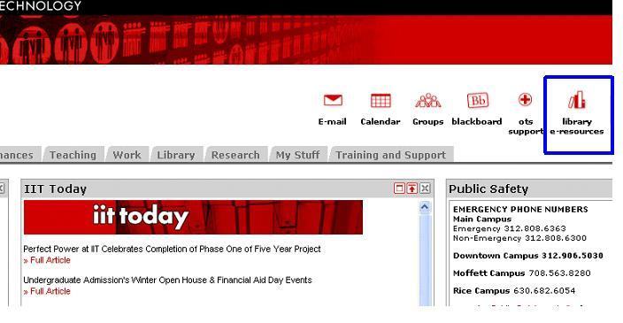

Module template
This page demonstrates the structures used in the Research and Data lessons. Copy it into the modules folder, rename it, and replace the examples with the new lesson content.
Learning objectives
Introduce the audience and purpose of the lesson here.
- Describe the first learning outcome.
- Describe another learning outcome.
Lesson section
Introduce a topic, then use subheadings to divide it into manageable parts.
Follow the steps
- Describe the first action.
- Describe the next action and expected result.
- Tell the reader how to check the result.
Group related information
-
A topic or resource
- A supporting detail.
- Another supporting detail.
- Another topic or resource.
Key rule: show an important relationship or formula in a consistent callout.
Terms and explanations
- Example term
- Explain the term here. A definition list keeps the label connected to its explanation.
- Another term
- Add the next explanation.
Figures and supporting files
Place each original illustration near the instruction it supports. Give it descriptive alternative text and a visible caption.

Example download: Data lesson tutorial spreadsheet (XLSX) .